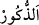
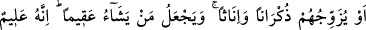
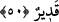
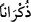

râzı olmazsa o, Allah’ın gazabına maruz kalır. Bu zamanda nice insanların câhiliye
ehline uyarak kız evlâdlarını hor görüp sevmediklerine şâhid olursun. Şâyet bu insanlar
Peygamberimiz (s.a.)’i örnek almış olsalardı elbette onun sevdiğini severlerdi. Bu da
onlar için pek büyük bir şeref olurdu.
“Dilediğine de erkek evladlar bahşeder.” Bunlar arasında kız evlâdı bulunmaz.
İbrâhim (a.s.)’a hibe ettiği gibi ki, bu konuda hiçbir beşerin müdâhalesi, tesiri ve itiraza
mahal bir durum yoktur. Şâirin ifâdesiyle:
Hakk’ın seçmesi bizim seçmemiz gibi olmaz,
Bizim kıvılcımımız hiç güneş ışığı gibi olur mu?
“
/zükûr”, “zeker” kelimesinin çoğuludur. Dişinin zıddıdır. Burada âyet
sonlarındaki uyumu korumak yahut beyanda sonraya kalmaktan meydana gelen açığı
kapatmak için kelime “ez-zükûr” şeklinde mârife olarak getirilmiştir. Yani takdim
edilmeye ve öncelik tanınmaya erkekler daha lâyık olduğu halde Allah Teâlâ onları
sonraya bırakmıştır. Daha sonra erkeklerden mârife olarak bahsetmekle bunu telâfi
etmiştir. Çünkü mârifelikte teşhir ve tanıtma vardır. Sanki şöyle buyrulmuş olmaktadır:
Allah dilediğine, size hiç de gizli olmayan bayraklı süvâriler hibe eder. Nitekim hadis-i
şerifte şöyle buyrulmaktadır: “Evlâdlarınız size Allah’ın hibesidir. Allah dilediğine
kız, dilediğine de erkek evlâdlar hibe eder. Muhtaç olduğunuz takdirde onların
malları da sizindir.”[134]
50. Yahut onları, hem erkek hem de kız çocukları olmak üzere çift verir.
Dilediğini de kısır kılar. O, her şeyi bilendir, her şeye gücü yetendir.
“Tezvîc”in mânâsı çifti yakınlaştırmak, evlendirmek demektir. Tacü’l-masâdir’de de
böyledir. “
/zükrân” da zeker kelimesinin çoğuludur. Mânâ şöyledir: Yüce Allah her
iki sınıfı birleştirip her ikisinden de hibe eder. Böylece o kişinin erkek ve kız evlâdları
olur. Nitekim Peygamberimiz (s.a.)’e böyle hibe edilmiştir. Çünkü onun Kasım,
Abdullah ve İbrâhim isminde üç oğlu; Zeynep, Rukiye, Ümmü Gülsüm ve Fâtıma
isminde dört kızı vardır.
Bazılarına göre “onları çift yapar” âyetinin mânâsı, “önce erkek, sonra kız ve daha
sonra yine evladlar olmasıdır.” Yahut “erkek ve kız şeklinde ikiz olmalarıdır.”
“Dilediğini de kısır kılar.” Çocuksuz ve kısır yani evlâdı olmayan erkek, doğurmayan
kadın kılar. Kendisi doğurmaz, onun için de doğrulmaz. Çocuğu olmaz; Îsâ ve Yahyâ
(a.s.) gibi. Bunların evladı yoktur. Îsâ (a.s.) hiç evlenmemiştir. Gerçi Îsâ (a.s.) tekrar